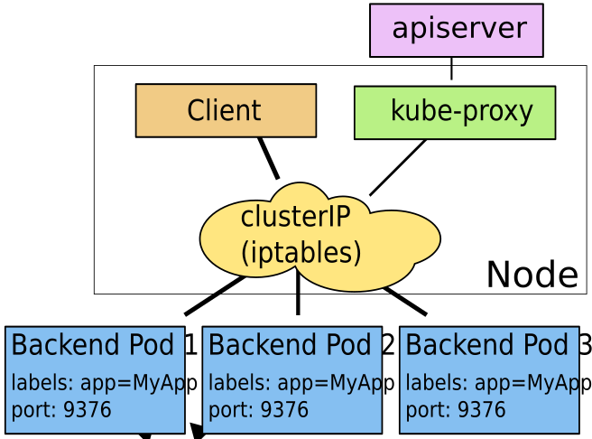

What's the difference between ClusterIP, NodePort and LoadBalancer service types in Kubernetes?
Question 1 - I'm reading the documentation and I'm slightly confused with the wording. It says:
ClusterIP : Exposes the service on a cluster-internal IP. Choosing this value makes the service only reachable from within the cluster. This is the default ServiceType
NodePort : Exposes the service on each Node’s IP at a static port (the NodePort). A ClusterIP service, to which the NodePort service will route, is automatically created. You’ll be able to contact the NodePort service, from outside the cluster, by requesting
<NodeIP>:<NodePort>.LoadBalancer : Exposes the service externally using a cloud provider’s load balancer. NodePort and ClusterIP services, to which the external load balancer will route, are automatically created.
Does the NodePort service type still use the ClusterIP but just at a
different port, which is open to external clients? So in this case is
<NodeIP>:<NodePort> the same as <ClusterIP>:<NodePort>?
Or is the NodeIP actually the IP found when you run kubectl get nodes and
not the virtual IP used for the ClusterIP service type?
Question 2 - Also in the diagram from the link below:

Is there any particular reason why the Client is inside the Node? I
assumed it would need to be inside a Clusterin the case of a ClusterIP
service type?
If the same diagram was drawn for NodePort, would it be valid to draw the
client completely outside both the Node andCluster or am I completely
missing the point?
Answer
A ClusterIP exposes the following:
spec.clusterIp:spec.ports[*].port
You can only access this service while inside the cluster. It is accessible
from its spec.clusterIp port. If a spec.ports[*].targetPort is set it will
route from the port to the targetPort. The CLUSTER-IP you get when calling
kubectl get services is the IP assigned to this service within the cluster
internally.
A NodePort exposes the following:
<NodeIP>:spec.ports[*].nodePortspec.clusterIp:spec.ports[*].port
If you access this service on a nodePort from the node's external IP, it will
route the request to spec.clusterIp:spec.ports[*].port, which will in turn
route it to your spec.ports[*].targetPort, if set. This service can also be
accessed in the same way as ClusterIP.
Your NodeIPs are the external IP addresses of the nodes. You cannot access
your service from spec.clusterIp:spec.ports[*].nodePort.
A LoadBalancer exposes the following:
spec.loadBalancerIp:spec.ports[*].port<NodeIP>:spec.ports[*].nodePortspec.clusterIp:spec.ports[*].port
You can access this service from your load balancer's IP address, which routes your request to a nodePort, which in turn routes the request to the clusterIP port. You can access this service as you would a NodePort or a ClusterIP service as well.
Suggest
To clarify for anyone who is looking for what is the difference between the 3 on a simpler level. You can expose your service with minimal ClusterIp (within k8s cluster) or larger exposure with NodePort (within cluster external to k8s cluster) or LoadBalancer (external world or whatever you defined in your LB).
ClusterIp exposure < NodePort exposure < LoadBalancer exposure
-
ClusterIp
Expose service through k8s cluster withip/name:port -
NodePort
Expose service through Internal network VM's also external to k8sip/name:port -
LoadBalancer
Expose service through External world or whatever you defined in your LB.